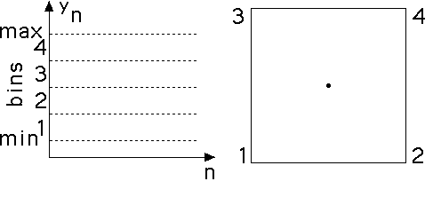

| We turn the data y1, y2, ..., yN into a sequence
i1, i2, ..., iN
of 1s, 2s, 3s, and 4s. This sequence is called the symbol
string associated with the data. |
| The data values yi often are measured
as decimals and because we are converting these to only four values, the process of
turning the
yk into ik is called coarse-graining. |
| The range of y values for corresponding to a symbol is the bin
of that symbol. |
| Though there are others, we use five kinds of coarse-graining: |
| equal-size bins Divide the range of values into four
intervals of equal length. |
| equal weight bins Arrange the bin boundaries so
(approximately) the same number of points lie in each bin. |
| zero-centered bins For data whose sign is
important, take 0 as the boundary between bins 2 and 3; place the other boundaries
symmetrically above and below 0. Unlike the first two cases, this is a family of
coarse-grainings depending on the placements of the other two bin boundaries. |
| mean-centered bins Take the mean of
the data to be the boundary between bins 2 and 3; place the other boundaries
symmetrically above and below the mean, usually expressed as a multiple of the
standard deviation. |
| median-centered bins Take the median of
the data to be the boundary between bins 2 and 3; place the other boundaries
symmetrically above and below the median, usually expressed as a multiple of the
range. Note the equal-weight bins are a special case of this. |
|
|  |
| Click the picture to return. |
|
|
Click the picture to return. |
| To illustrate the different kinds of coarse-graining, we use a data set consisting of
successive differences of 1000 numbers generated by iterating the
logistic map.
Click the picture for each example. |
 |
 |
 |
 |
 |
| Equal-size bins |
Equal-weight bins |
Zero-centered bins |
Mean-centerd bins |
Median-centerd bins |
|
| We will investigate some specific data sets in
finance cartoons,
for example.
|